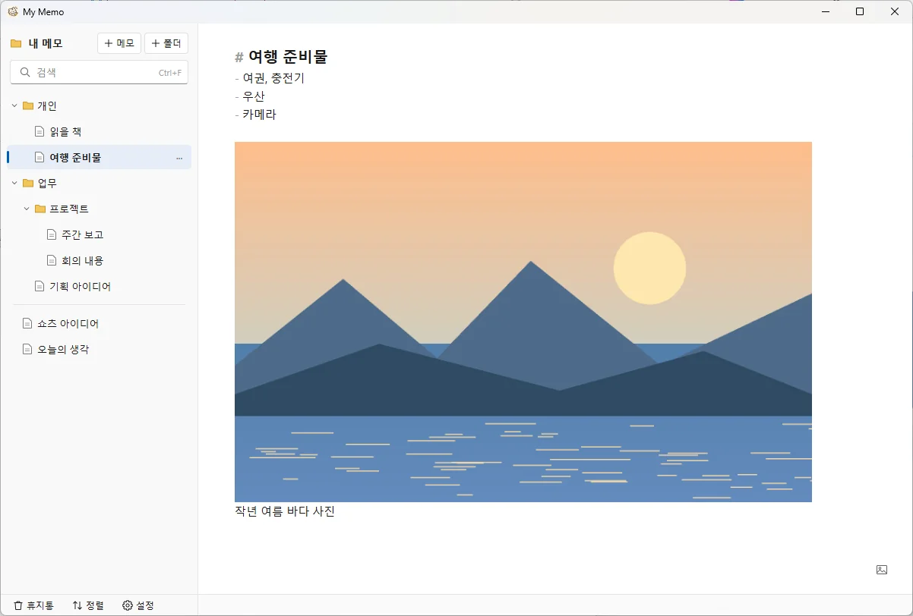
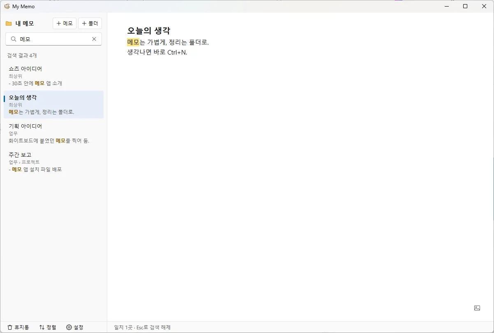
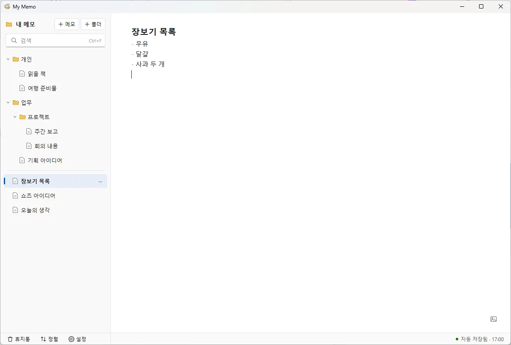
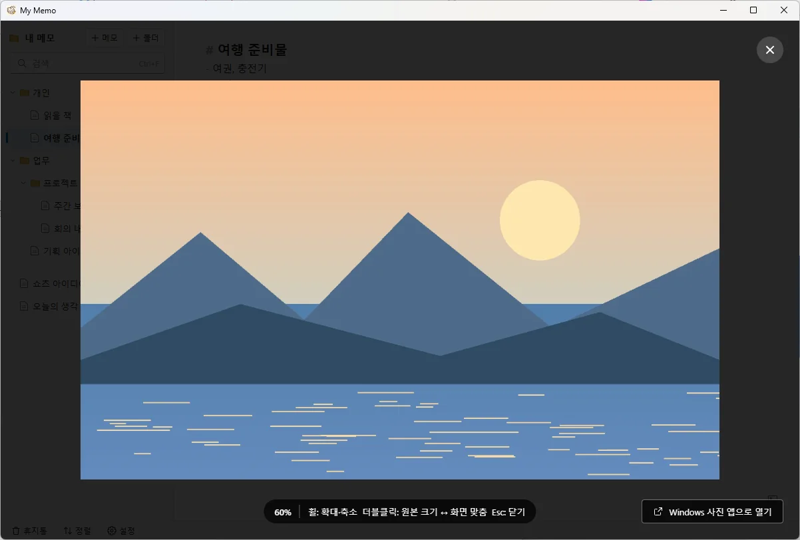
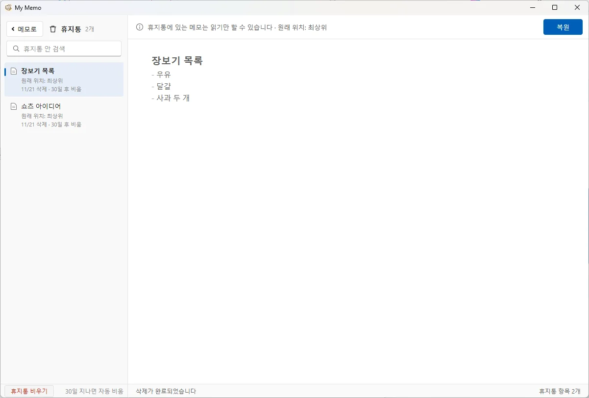
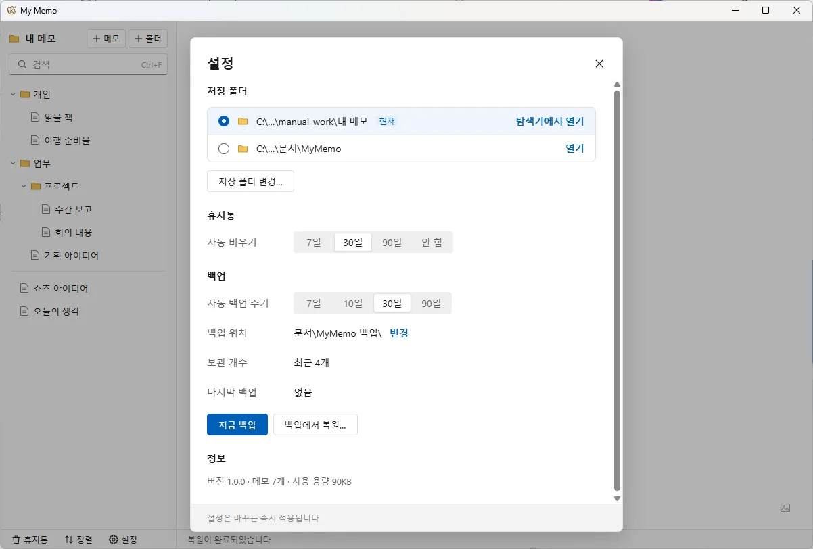

AI 개인 프로젝트
My Memo
메모장의 간편함에 폴더 목록과 이미지 삽입을 더한 Windows용 오프라인 메모 앱
※ Windows 10(21H2 이상)·11 64비트용입니다. 코드 서명을 하지 않은 개인용 설치 파일이라 처음 실행 시 SmartScreen 경고가 나오면 [추가 정보] → [실행]을 누르세요.
프로젝트 개요
My Memo는 생각·아이디어·스크린샷을 이미지와 함께 가볍게 적고, 폴더로 정리하고, 인터넷 없이 내 PC에 일반 파일로 저장하는 개인용 메모 앱입니다.
노션·원노트는 자료를 체계적으로 정리하기에 좋지만, 문득 떠오른 생각이나 캡처한 이미지를 가볍게 남기기에는 무겁게 느껴졌습니다.
메모장처럼 간편하게 쓰면서 이미지도 넣고 한곳에서 정리할 수 있되, 기록한 메모가 특정 앱이나 서비스에 종속되지 않기를 바랐습니다.
그래서 계정·데이터베이스 없이 내 PC에 보관하고, 저장 형식은 범용적인 Markdown(.md) 파일로 정해 메모장 등 다른 편집기에서도 열 수 있게 했습니다. 필요하면 HTML로 내보내 브라우저에서 이미지와 함께 볼 수도 있습니다.
가볍게 기록하고, 편하게 정리하고, 내 기록을 온전히 내 것으로 보관하는 메모 앱 — My Memo는 이 필요에서 시작했습니다.
핵심 과제 01
‘파일이 곧 데이터’인 저장 구조
앱이 없어져도 메모를 그대로 열 수 있도록, 데이터베이스 대신 사용자가 고른 폴더의 일반 파일을 원본으로 삼았습니다.
.md 파일 1개탐색기나 메모장에서 바꾼 이름·내용도 앱에 바로 반영되도록 외부 변경 감지와 충돌 시 사본 보존 규칙을 함께 설계했습니다.
관련 화면




핵심 과제 02
데이터를 잃지 않는 안전장치
메모 앱에서 가장 치명적인 문제는 데이터 유실이라고 보고, 리스크별로 대응 규칙을 먼저 정한 뒤 구현했습니다.
- 강제 종료·정전 — 임시 파일에 쓴 뒤 교체하는 저장 방식, 재실행 시 복구
- 실수로 삭제 — 앱 휴지통(30일) → Windows 휴지통 이중 보호, 어느 쪽에서 복원해도 원래 위치로
- 이미지 오삭제 — 사용하지 않는 이미지는 24시간 유예 후 묶음으로 휴지통 이동
- 장기 보관 — 주기 자동 백업(.zip)과 전체 복원, 없어진 이미지만 골라 복원
관련 화면


핵심 과제 03
승인 단계를 둔 AI 협업 개발 프로세스
PRD와 기술 설계를 합친 최종설계서(기능 F-01~F-19, 처리 규칙 R-xx)와 화면설계서(S-01~S-12)를 먼저 확정한 뒤, Claude Code와 함께 구현했습니다.
개발은 17개 section, 141개 task로 나누고, task마다 Claude Code가 완료 보고를 하면 직접 확인해 승인한 뒤에만 다음 task로 넘어가도록 했습니다. 커밋도 section 단위로 승인 후에만 진행했습니다.
설계서에 없는 결정이 필요하면 AI가 임의로 정하지 않고 ‘결정 대기’ 표에 권장안과 함께 올리도록 해, 기술 선택·예외 처리 같은 판단을 PM이 기록으로 남기며 결정했습니다.
테스트 이름에 규칙 ID를 넣어 요구사항 → 규칙 → 자동 테스트 → 수용 기준을 추적할 수 있게 했습니다.
결과
- v1.0.0 설치 파일(NSIS) 출시
- 메모 1,000개 환경에서 성능 목표 충족 — 메모 전환 최대 27ms, 검색 151ms, 대기 메모리 96MB
- 앱이 만드는 네트워크 요청 0건, 인터넷 없이 모든 기능 동작
- 소개 및 사용 설명서 작성
회고
AI와 개발 속도를 맞추려면, 무엇을 만들지보다 ‘무엇을 만들지 않을지’와 ‘어떻게 확인할지’를 먼저 정해 두는 것이 중요했습니다.
서식 도구, 클라우드 동기화, 로그인처럼 v1.0에서 제외할 범위를 설계서에 명시하고, 설계서에 없는 기능은 추가하지 않는다는 원칙을 두어 범위가 흔들리지 않게 했습니다.
또한 기능마다 수용 기준과 테스트를 연결해 두었기 때문에, 구현 결과가 많아져도 무엇이 확인되었고 무엇이 남았는지 PM이 판단할 수 있었습니다.